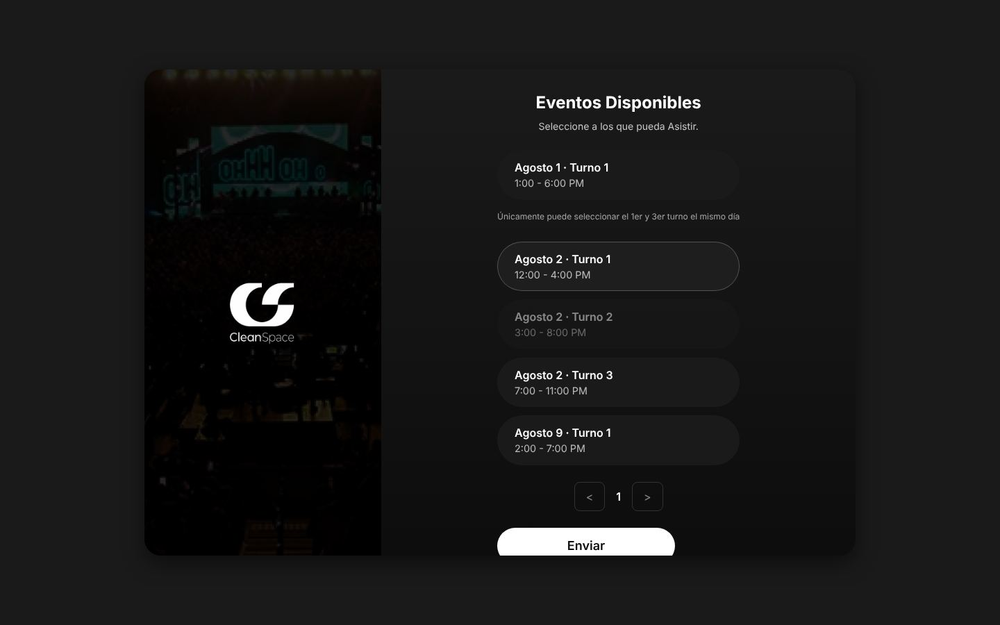

Sección103

Una plataforma para reclutar al equipo de limpieza de grandes eventos: registro, foto de identificación, elección de turnos y un panel para publicar fechas.
- Evento
- CleanSpace
- Sección
- 103
- Fila
- 2026
- Asiento
- Plataforma
- Función
- Identidad, diseño y desarrollo
- Herramientas
- PHP · MySQL · Tailwind CSS · JavaScript
EG-103-2026
4pasos de registro
3turnos por día
2roles: persona y admin
El encargo
Cada evento en estadio necesita decenas de personas por turno. El registro se hacía por mensajes y hojas sueltas. Hacía falta un flujo corto que funcionara desde el teléfono.
Lo que hice
- Logotipo y estilo de CleanSpace: Tu espacio, limpio y brillante.
- Registro con datos de contacto y permiso de trabajo.
- Subida de foto con requisitos claros: buena luz, de frente, sin gorra ni lentes.
- Lista de turnos paginada con reglas: el mismo día se pueden tomar el 1.º y el 3.º turno, pero no el 2.º junto a ellos.
- Panel de administración para crear, editar y publicar eventos y gestionar inscritos.
Decisiones
Reglas en la interfaz
Los turnos incompatibles se bloquean al marcar, no después con un error.
Borrador y publicado
El administrador prepara fechas sin que nadie las vea hasta publicarlas.
Contraseñas seguras
Acceso con password_hash y consultas preparadas en todas las tablas.